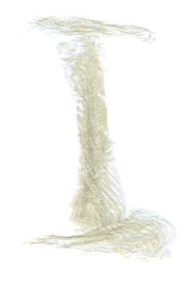

“When Ralph Wiley discovered polyvinylidene chloride (PVDC) while working in the physicals lab at Dow Chemical in Midland, Michigan, he nicknamed it eonite after a fictional, indestructible material in the comic strip
His task had been to create a new product out of hydrocarbon and chlorine, two by-products of manufacturing the dry-cleaning agent perchloroethylene.
The newfound chemical was so water-resistant that it couldn’t be washed clean from its distillation flask. PVDC molecules bind together so tightly, they’re nearly impenetrable by oxygen and water molecules. Those properties made the material attractive in war efforts and in American kitchens as Saran Wrap.
By the 1960s, the Australian company GLAD had created its own—though less clingy—version of plastic wrap from polyethylene. Saran Wrap too is now made from polyethylene after consumers grew concerned about the health impacts of wrapping their food in a plastic made with chloride.”